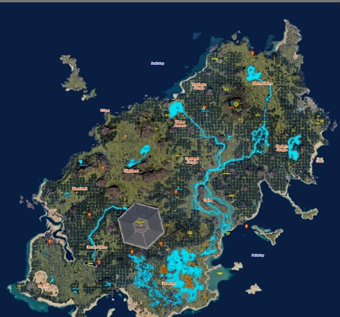

Compilado por um sobrevivente. Escrito com sangue, experiência e muito medo. Se você está lendo isso — ainda há tempo. Use cada palavra.
Três semanas na ilha. Perdi a conta de quantas vezes quase não voltei. Vi criaturas que não deveriam existir. Aprendi que aqui, a única diferença entre viver e morrer é o que você sabe — e o que você faz com esse conhecimento antes que seja tarde demais.
Este guia foi compilado com experiências reais na ilha. Cada registro custou sangue — meu ou de criaturas que não tiveram pena de mim. Aqui não há teorias. Só o que funciona.
Se você encontrou este guia, mantenha-o consigo. Atualize-o. Adicione suas próprias anotações. Nesta ilha, conhecimento é a única arma que não se parte.
"Acordei hoje. Isso já é vitória. O Rex passou a noite inteira circulando o perímetro. Não movi um músculo."
Catalogadas em campo. Cada entrada representa uma fuga, um confronto ou a morte de alguém que não era eu. Aprenda com elas.
Mapeei cada região. Cada uma tem seus predadores, suas armadilhas, sua forma de te matar. Memorize isso antes de sair do esconderijo.

Sinais captados de fora da ilha. Os desenvolvedores ainda monitoram a situação. Estas são as últimas transmissões recebidas.
Protocolos escritos às pressas. Alguns no escuro. Todos testados. Não ignore nenhum.
Sobreviventes que contribuíram com este registro. Se você quiser se juntar — encontre-nos. Se ainda estiver vivo.